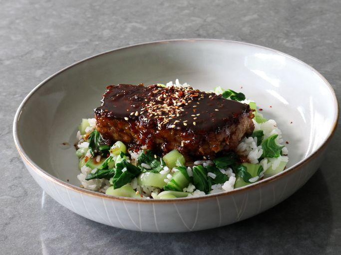

Mongolian Meatloaf

Ingredients
- Meatloaf
- 1 tablespoon vegetable oil
- 1 cup diced yellow onion
- 3 cloves garlic, crushed
- 2 teaspoons finely grated fresh ginger
- 2 pounds ground beef
- 1 cup cooked rice, cold or at room temperature
- 1 large egg, beaten
- 1/2 cup sliced green onions
- 1 tablespoon soy sauce
- 1 teaspoon kosher salt
- 1/2 teaspoon freshly ground black pepper
- Sauce
- 2 teaspoons vegetable oil
- 1 tablespoon grated fresh ginger
- 4 cloves garlic, minced
- 1/2 cup packed brown sugar
- 1/2 cup low-sodium soy sauce
- 1/4 cup water
- 2 tablespoons ketchup
- 1 teaspoon red pepper flakes
- 1 rounded teaspoon cornstarch
- 2 teaspoons water
- To serve
- cornstarch, as needed for dusting (optional)
- vegetable oil, as needed for frying
- toasted sesame seeds (optional)
- sliced green onions and chopped fresh cilantro (optional)
Directions
- Preheat the oven to 350 degrees F (180 degrees C). Lightly oil a loaf pan.
- Heat 1 tablespoon vegetable oil in a nonstick skillet over medium-high heat and sauté yellow onions with a pinch of salt until they start to turn golden, 3 to 5 minutes. Stir in 3 cloves crushed garlic and 2 teaspoons ginger, and cook for 1 minute more. Remove from heat and let cool to room temperature, about 15 minutes.
- Add cooled onion mixture to ground beef along with rice, egg, green onions, 1 tablespoon soy sauce, salt, and black pepper. Use a fork, spatula, or your hands to mix together until evenly combined. Transfer to the prepared loaf pan, press in firmly, and smooth the top.
- Bake in the preheated oven until an instant read thermometer inserted in the center reads 145 to 150 degrees F (63 to 65 degrees C), about 1 hour. Meatloaf can be served hot, or let cool, wrap and refrigerate until chilled, about 45 minutes.
- For the sauce, combine 2 teaspoons oil, 1 tablespoon ginger, and 4 minced garlic cloves in a cold nonstick skillet.
- Turn heat on to medium-high. Once ginger and garlic start to sizzle, cook, stirring, for about 30 seconds, then whisk in brown sugar, 1/2 cup soy sauce, 1/4 cup water, ketchup, and red pepper flakes. Bring to a simmer, then reduce heat to low.
- Whisk 1 teaspoon cornstarch with 2 teaspoons water together in a small bowl to make a slurry; stir into the sauce. Raise heat to medium-high and return to a simmer. Cook, whisking occasionally, until sauce thickens slightly, about 2 minutes. Reduce heat to low and keep warm until needed (Sauce may be made ahead and reheated on medium-low heat).
- Remove cold meatloaf from the refrigerator and slice into 8 portions. Dust each side with cornstarch, and reheat over medium high heat in a nonstick skillet in a little bit of vegetable oil until browned and heated through. If surface browns before meatloaf is heated through, reduce heat to medium, and cover until done.
- Serve topped with the sauce; garnish with toasted sesame seeds, sliced green onions, and chopped cilantro if desired.
Previous Item Menu Next Item